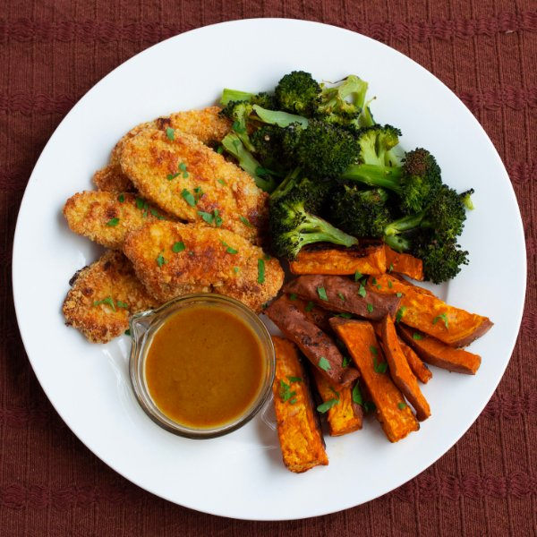

Chicken Tenders with Roasted Vegetables & Spicy Maple Mustard

Nutrition (per serving)
702.7 kcalCalories
53.3 gProtein
55.2 gCarbs
31.2 gFat
Full nutrition table
| Calories | 702.7 kcal |
| Total fat | 31.2 g |
| Saturated fat | 3.8 g |
| Trans fat | 0 g |
| Cholesterol | 206 mg |
| Sodium | 195.2 mg |
| Carbohydrates | 55.2 g |
| Fiber | 9.2 g |
| Sugars | 15.7 g |
| Protein | 53.3 g |
| Potassium | 1451.2 mg |
| Calcium | 205.1 mg |
| Iron | 4.3 mg |
| Vitamin A | 11491.6 IU |
| Vitamin C | 88.4 mg |
| Vitamin D | 19.7 IU |
Cookware
Ingredients
- 2 crownsbroccoli
- 1 ½ lbchicken breasts, boneless skinless
- 2eggs
- ½ small bunchItalian (flat-leaf) parsley
- ⅔ lbsweet potato
- almond meal/flour
- black pepper
- cayenne pepper
- cornstarch
- Dijon mustard
- extra virgin olive oil
- garlic powder
- paprika
- pure maple syrup
- salt
Steps
- Preheat the oven to 425°F and position rack in the center and bottom of the oven. Line two baking sheets with parchment paper.
- Wash and dry the fresh produce.2 crowns broccoli
⅔ lb sweet potato
½ small bunch Italian (flat-leaf) parsley - Cut the sweet potatoes in half lengthwise, then cut each half into ½-inch planks, then into sticks. Add to a medium bowl.
- Drizzle sweet potatoes with oil and season with garlic powder, salt, and pepper and toss until evenly coated. Spread out in an even layer on one of the prepared baking sheets and place in the oven, cook for 10 minutes. Set the bowl aside for the broccoli.2 tsp extra virgin olive oil
½ tsp garlic powder
½ tsp salt
¼ tsp black pepper - Separate broccoli into bite-sized florets and cut stems into strips. Add to the bowl used for the sweet potatoes and toss with oil and spices. Set aside.2 tsp extra virgin olive oil
½ tsp salt
¼ tsp black pepper - Meanwhile, measure out the cornstarch in a medium bowl for dredging.½ cup cornstarch
- In another medium bowl, whisk the egg.2 eggs
- In a third medium bowl, mix together the almond meal, garlic powder, paprika, salt, and cayenne pepper. Stir to combine.1 ½ cup almond meal/flour
1 tsp garlic powder
1 tsp paprika
2 tsp salt
½ tsp cayenne pepper - Cut the chicken into 1-inch thick strips.1 ½ lb chicken breasts, boneless skinless
- First, dredge the strips in cornstarch, shaking off any excess. Then, dip the chicken strips into the egg. Finally, dredge in almond meal mixture, pressing gently to adhere. Shake off excess and place on another prepared baking sheet. Place in the oven for 10 minutes.
- Meanwhile, in small bowl prepare the dip by whisking together Dijon, maple syrup, salt, and cayenne. Set aside.2 tbsp Dijon mustard
3 tbsp pure maple syrup
¼ tsp salt
¼ tsp cayenne pepper - When the potatoes have baked for 10 minutes, remove from oven and spread broccoli evenly over top. Return to oven and bake for another 15 minutes, until potatoes are fork tender.
- Once the chicken has cooked for 10 minutes remove from oven and flip. Return to oven and bake an additional 8-10 minutes.
- Using a knife, shave the parsley leaves off the stems at a downward angle; discard the stems and finely chop the leaves.
- To serve, arrange chicken tenders, wedges and broccoli on a plate. Garnish with parsley and serve with the maple mustard dip. Enjoy!